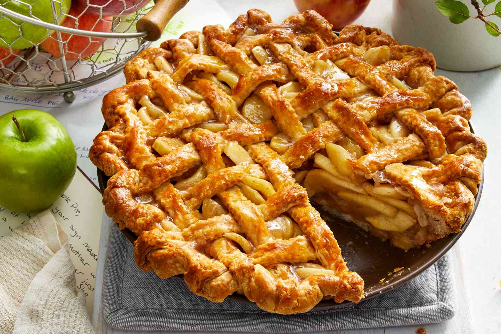

Apple Pie

Description
The one trick with this apple pie recipe that makes all the difference? Baking the apple slices first. It’s the magic key to a crispy base, superior flavour and perfectly-cooked-and-never-mushy filling. It’s also how you get a generous amount of pie filling without the dreaded giant empty cavity under the lid.
Serve this all-time favourite warm with a scoop of vanilla ice cream for the perfect homemade dessert!
Ingredients
- Granny Smith Apples - There’s plenty of opinions out there about the best apples for Apple Pie. But for me, Granny Smith is The One, for its tartness and ability to hold its shaped once cooked. This is key to avoiding a mushy filling!
- Brown Sugar - My choice of sugar for caramelly sweetness. I use 1 cup of brown sugar which, to me, provides the perfect level of sweet-but-not-too-sweet
- Cinnamon - Adds a layer of warmth
- Butter - Just a dab, for simmering with the apple juices on the tray to make a syrup for the Apple Pie filling.
- Salt - Just a touch, to bring out the other flavours. It doesn’t make it salty at all.
- Egg - Used to brush the pie lid to make it a beautiful and shiny golden brown!
Steps
- Prepare the pie crust using a pie crust recipe of your choice.
- Blind bake the crust. This will ensure the base is fully cooked.
- Cook apple slices with cinnamon and sugar.
- Fill the pie with your cookes apple slices.
- Create a lattice to cover your pie
- Put the pie back in the oven to finish cooking.